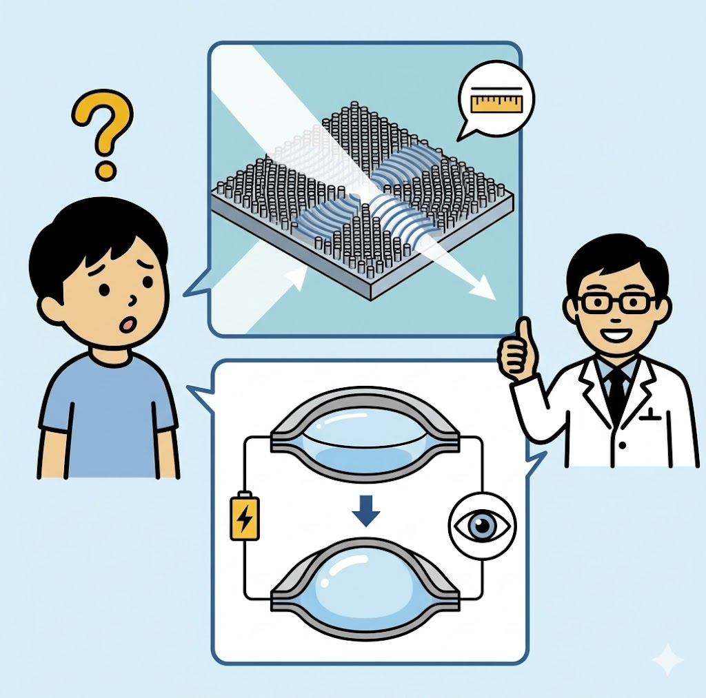
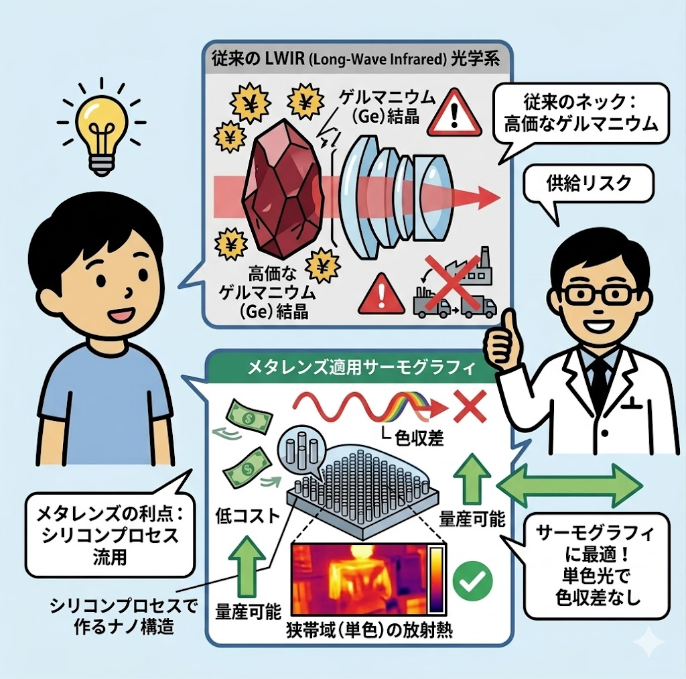
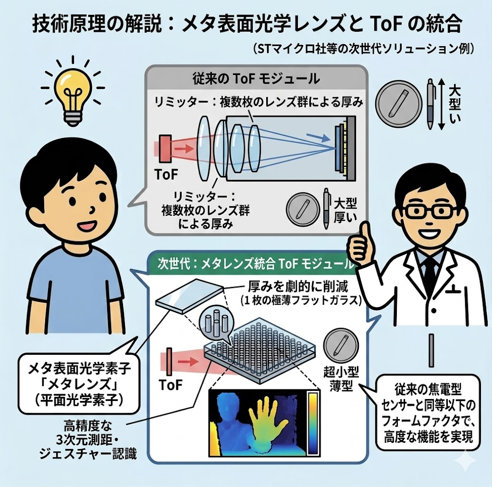
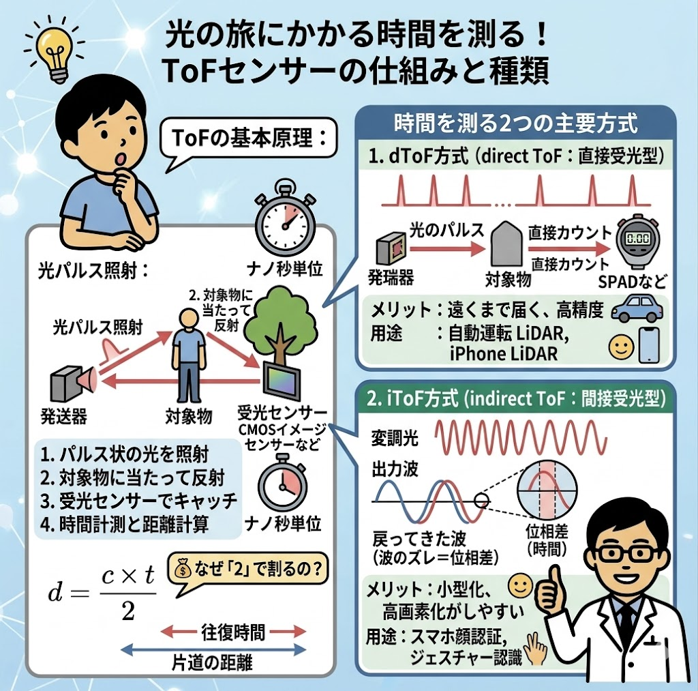

プロローグ：登場する次世代レンズとセンサーの正体
👧
アカリ（中学生）
サトウさん、会社で「メタレンズ」とか「液体レンズ」っていう新しい技術の言葉が飛び交っていて難しそう。これまでのレンズや、有名な「LYNRED」のセンサーと何が違うの？
👨💻
サトウ（開発プランナー）
いい質問だね！簡単に言うと、どれも「これまでのカメラのサイズやコスト、スピードの限界をぶち破る発明」なんだ。それぞれの特徴を整理してみよう。
👧
アカリ（中学生）
限界をぶち破る？
👨💻
サトウ（開発プランナー）
そう。たとえば「メタレンズ」は、ナノ構造で光を曲げる、まるでペラペラの紙のように真っ平らで超薄型のレンズ。「液体レンズ」は、電気を流して液体の形を変え、瞬時にピントを合わせる超高速レンズ。そして「LYNRED」はモノが放つ熱（赤外線）を検知して画像にするサーモグラフィセンサーの世界最高峰メーカーんだよ。
技術要素の整理（構造と限界突破の方向性）
・メタレンズ： メタサーフェス構造を用い、フラットな面で位相を制御する超薄型光学素子。光学系の厚み・重量の限界を突破します。
・液体レンズ： エレクトロウェッティング現象を利用し、可動部なしで液滴の曲率を変える高速フォーカス素子。駆動速度と耐久性の限界を突破します。
・LYNRED（赤外線サーモグラフィ）： 長波長赤外線（LWIR）をマイクロボロメータで検知する熱画像センサー。レーザーの反射時間を測るToF型（距離計）とは異なり、空間の熱分布を可視化する技術です。

第1章：なぜ「サーモグラフィ（熱検知）」でメタレンズが爆発的に求められているのか？
👧
アカリ（中学生）
メタレンズって、距離を測る「ToFセンサー」に使うものだと思っていました！サーモグラフィ（熱カメラ）でも使えるんですか？
👨💻
サトウ（開発プランナー）
実はね、LYNREDが扱っているようなサーモグラフィの分野こそ、いまメタレンズが喉から手が出るほど熱望されているんだ。理由は大きく「3つのメリット」があるからだよ。
👧
アカリ（中学生）
その3つのメリットってなに？
👨💻
サトウ（開発プランナー）
1つ目は「コストの破壊」。従来の熱カメラはガラスレンズが使えなくて、超高価なレアメタル「ゲルマニウム」を削って作っていたからバカ高かった。メタレンズ（シリコン製など）にすれば、材料費をタダ同然にできる。2つ目は「単一波長（1つの色）」だということ。メタレンズはフルカラーの処理は苦手だけど、サーモグラフィは『熱（遠赤外線）』という1つの色（波長帯）しか見ないから、メタレンズの得意分野ど真ん中んだよ。3つ目は「極限の小型化」。これでスマホや車のフロントガラスに埋め込める薄さになる。
技術原理の解説（サーモグラフィへのメタレンズ適用優位性）
従来のLWIR（長波長赤外線）光学系は、透過材として極めて高価かつ供給リスクのあるゲルマニウム結晶を必要とし、これがコスト全体のボトルネックとなっていました。
メタレンズは半導体シリコンプロセス等を流用可能であり、かつ単色（狭帯域）の放射熱を捉えるサーモグラフィ用途において、最大の弱点である色収差（波長分散）の問題が発生しないため、物理特性・製造コストの双方において理想的なマッチングを示します。

第2章：大進化！「ToF×メタレンズ」がセンサーを米粒サイズにする
👧
アカリ（中学生）
ToFセンサーがものすごく優秀なのは分かりました！でも、自分で光を出して時間を測るなんて、部品がすごく複雑になって大きくなったりしないんですか？スマホとかに入らなさそう……。
👨💻
サトウ（開発エンジニア）
鋭いね！まさにその通りで、これまでは「光を調節するためにレンズが何枚も必要で、センサーが分厚くなってしまう」のが、スマホや小型ロボットに入れる上での最大のネック（技術的課題）だったんだ。
👧
アカリ（中学生）
やっぱり！じゃあどうやって解決したの？
👨💻
サトウ（開発エンジニア）
そこで世界をリードしているのがSTマイクロ（STMicroelectronics）という会社さ。彼らは、レンズを普通の形ではなく「メタレンズ（真っ平らなレンズ）」にするという、とんでもない必殺技を組み合わせたんだよ。
- 必殺技：メタレンズ化（超フラット）
ナノサイズ（ウイルスの小ささ！）の目に見えない細かい突起を平らなガラスに並べることで、分厚い何枚ものレンズと同じように光を曲げちゃう技術なんだ。
サトウ（エンジニアの声）：
「これなら何枚もあったレンズが、たった1枚の米粒サイズ（真っ平ら）にできる。従来の人感センサー並みに小さくなって、どんな機器にも仕込める最強の距離センサーになるじゃん！」っていう大革命なんだよ。
「これなら何枚もあったレンズが、たった1枚の米粒サイズ（真っ平ら）にできる。従来の人感センサー並みに小さくなって、どんな機器にも仕込める最強の距離センサーになるじゃん！」っていう大革命なんだよ。
👧
アカリ（中学生）
すごーーい！性能がいいのにサイズは米粒なんて、未来のロボットやスマホがどんどん薄く小さくなるわけだ！
技術原理の解説（メタ表面光学レンズとToFの統合）
ToF（Time-of-Flight）センサーのモジュール小型化において、最大のリミッターとなっていたのが屈折光学系（複数枚のレンズ群）による厚みでした。
STマイクロ社をはじめとする次世代ソリューションでは、波長以下のナノ構造体を配置して位相を制御する平面光学素子「メタレンズ（Meta-lens）」を統合。光の波面を1枚の極薄フラットガラス上で再構成することで、厚みを劇的に削減しました。
これにより、従来の焦電型（人感）センサーと同等以下のフォームファクタでありながら、高精度な3次元測距・ジェスチャー認識が可能な、超小型アクティブ・デプスセンシング・モジュールが実現しています。

第3章：プレイヤーの結びつきと、御社だけの「最強のポジション」
👧
アカリ（中学生）
すごい技術だけど、いろんなメーカーが入り乱れていて、私たちの会社はどう関わればいいの？
👨💻
サトウ（開発プランナー）
そこがこのビジネスの一番面白いところさ。今、御社の周りにはバラバラに凄いピース（プレイヤー）が揃っているんだ。まるでパズルの中心に御社がいるような「最強の主導権（ポジション）」を握っているんだよ。
👧
アカリ（中学生）
どういうこと？教えて！
👨💻
サトウ（開発プランナー）
まず、サプライヤーの「LYNRED」は赤外線センサーの天才。だけど、メタレンズを数百万〜数千万個レベルで安く大量生産する巨大な半導体工場は持っていない。一方で、関係先である半導体の巨人「STマイクロ」は、メタレンズを大量生産する世界最先端の工場と技術をすでに持っている。そして、この両社とすでにビジネスのパイプを持っているのが、他でもない「御社」なんだ！
サトウ（プランナーの目線）：
「一般的な代理店なら、メタレンズを1枚ずつ右から左へ転売して数％の利益を得るだけ。でも、御社は違う。『センサーのプロ（LYNRED）』と『量産の巨人（STマイクロ）』を繋いで、世の中にない新しい製品の主導権を握ることができる立場にあるんだよ。」
「一般的な代理店なら、メタレンズを1枚ずつ右から左へ転売して数％の利益を得るだけ。でも、御社は違う。『センサーのプロ（LYNRED）』と『量産の巨人（STマイクロ）』を繋いで、世の中にない新しい製品の主導権を握ることができる立場にあるんだよ。」
サプライチェーン・エコシステム分析
・LYNRED： センサーアレイ（ボロメータ）技術を保有するが、民生・車載向け超量産ファブおよびメタサーフェス製造プロセスは外部依存の構造。
・STマイクロエレクトロニクス： 光学メタレンズの商業的大量生産体制（ファンドリ・製造技術）を世界に先駆けて確立しつつある半導体メガサプライヤー。
・御社（CHRONIX）： 両先端プレイヤーとの既存チャネルを跨ぎ、個別素子の販売から「統合モジュールソリューション」へと上流への価値転換を主導できるハブポジションに位置します。

第4章：巨額の共同開発を仕掛ける！御社発の「次世代ビジネス提案」
👧
アカリ（中学生）
じゃあ、具体的にこれからどう動けば、その大口のビジネスが始まるんですか？
👨💻
サトウ（開発プランナー）
サプライヤーであるLYNREDへ、御社からこんな風に「共同開発ビジネス」の提案を仕掛けるんだ。
👧
アカリ（中学生）
どんな提案？
👨💻
サトウ（開発プランナー）
『LYNREDの優れたサーモセンサーに、うちのパートナーであるSTマイクロのメタレンズ量産技術を組み合わせて、世界初・レンズ一体型の「超小型・激安サーモセンサーモジュール」を一緒に開発しませんか？』ってね。これが実現すれば、御社には凄まじいメリットが生まれるよ。
- 対 サプライヤー（LYNRED）： 単なる仕入れ先から、世界初を一緒に作る「対等で強固な開発パートナー」へと格上げされる。
- 対 関係先（STマイクロ）： ST社にとっても自社のメタレンズ製造ラインを稼働させる巨大案件になるため、御社の存在感が跳ね上がる。
- 対 顧客（日本メーカー）： これまで高くて諦めていた自動車（夜間歩行者検知）や防犯カメラ、スマホ、最新家電向けに「薄くて圧倒的に安いサーモカメラ」を御社が独占（または先行）して提案・販売できる！
技術ビジネス提案（レンズ一体型モジュールの水平分業モデル）
従来の「センサーを買ってきて、光学メーカーのゲルマニウムレンズをアセンブリする」垂直統合・高コスト型モデルを打破します。
STマイクロのシリコンウェハベースのメタレンズ製造技術と、LYNREDのボロメータウェハをパッケージレベルで統合（Wafer-Level Packaging: WLP）するスキームを御社主導で提案することにより、車載ナイトビジョンやスマートフォンへの民生展開を可能にする「極小・低価格赤外線イメージングモジュール」の市場独占を狙います。
エピローグ：プロフェッショナルの次なる一歩
👧
アカリ（中学生）
なるほど……！ただ部品を仕入れて売るだけじゃなくて、技術のトレンドを先読みして、世界的な大企業同士をコーディネートする。これが本当に面白いビジネスの形なんですね！
👨💻
サトウ（開発プランナー）
その通り。この大きなビジネスへの第一歩は、驚くほど身近なところから始まるんだ。まずはLYNREDの担当者に雑談ベースで聞いてみるのさ。『サーモセンサーのコストを下げるために、メタレンズのロードマップはある？』『もし製造パートナー（ST社）を含めて、一体型モジュールの共同開発に興味がある？』ってね。ここから時代が変わるよ。
👧
アカリ（中学生）
うん！でもサトウさん、それって『LYNREDがSTマイクロを、あるいはSTマイクロがLYNREDを直接買収しちゃったら、真ん中にいる私たちのマージン、一瞬で消えちゃいません？』……まずは両社のトップが直接握らないように、技術の『秘密保持契約（NDA）』の主導権を御社がガチガチに握るところからスタートですね！
👨💻
サトウ（開発プランナー）
…………っ！（中学生のくせに中抜き排除のリスクと知財戦略の本質を突いてくるとは……絶句）
総括：コンポーネント販売からソリューションインテグレーションへ
次世代の光学市場（メタレンズ・液体レンズ）における商社・プロバイダーの勝ち筋は、単体のレンズ売りには存在しません。
LYNREDが持つ「LWIR領域の物理的検出ノウハウ」と、STマイクロが持つ「半導体微細加工による光学製造キャパシティ」という、通常交わらないレイヤーのトップランナーを繋ぎ、新市場のアプリケーション（車載・民生）へ適合させるインテグレーション設計思想こそが、今後の持続的な高付加価値ビジネスを決定づけます。
メタレンズ×赤外線サーモグラフィの融合。それは、レアメタル材料工学に依存していた旧来の光学系を、シリコン半導体製造の数理・スケールメリットのパラダイムへとシフトさせる歴史的転換点です。自社が保有する既存サプライチェーンの接点を戦略的にレバレッジし、上流の仕様策定から参画することの価値は計り知れません。